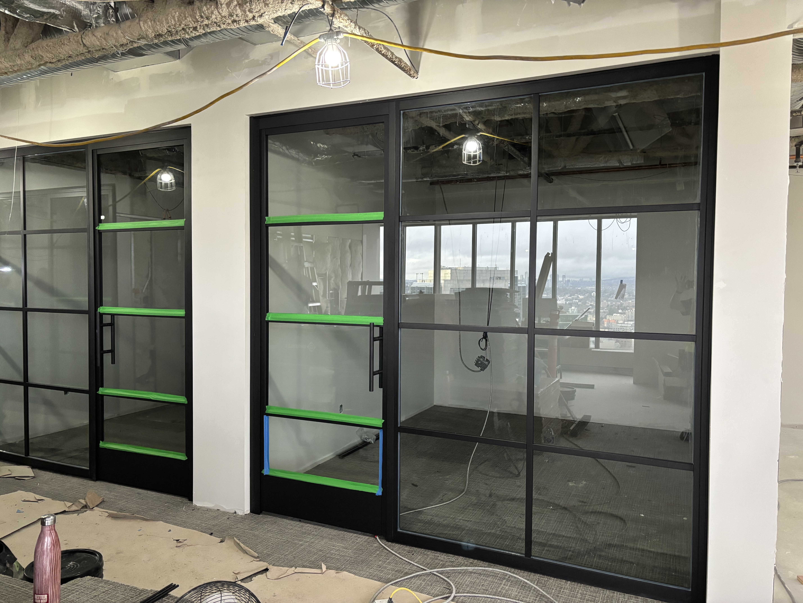
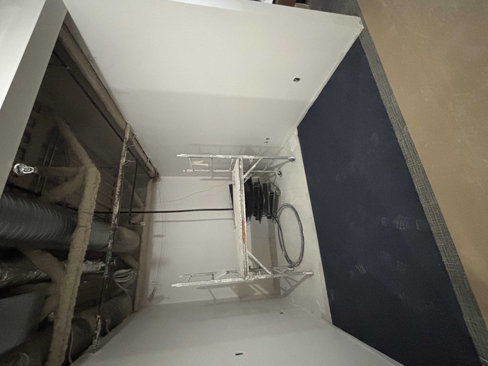
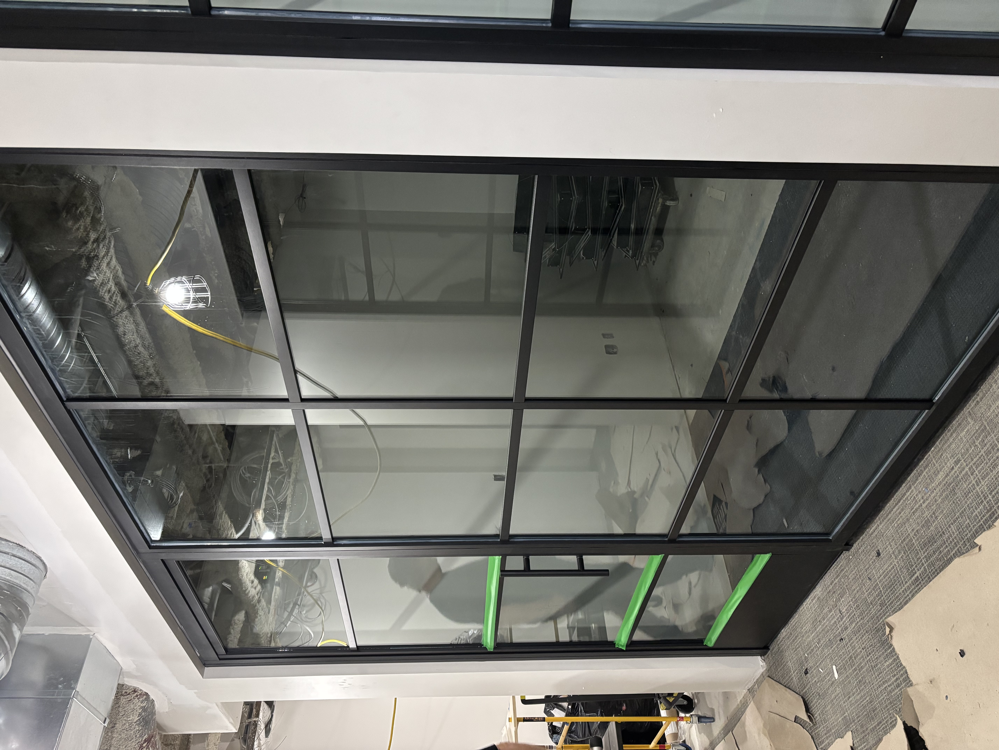

Multi-unit corridor
Acoustic doors · Door closing systems
A sample of the construction environments where SAFI crews work daily — modular interior systems, commercial fit-outs, and traditional construction scopes including drywall, framing, protection, and finishing.

Acoustic doors · Door closing systems

Framing · Boarding

Prep · Protection
Useful for fit-outs, partitions, framing, protection and finishing phases that need reliable labour support.
SAFI is positioned for repeatable scopes where coordination, speed and consistent field execution matter.
Cleanup, finishing and punch-oriented tasks can be framed as part of the same operational support model.
Use the quote request flow if you already know your scope, or reach out directly if you want to confirm service fit, timing or labour availability.